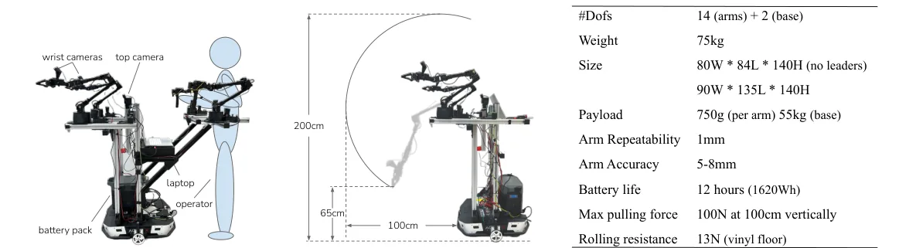
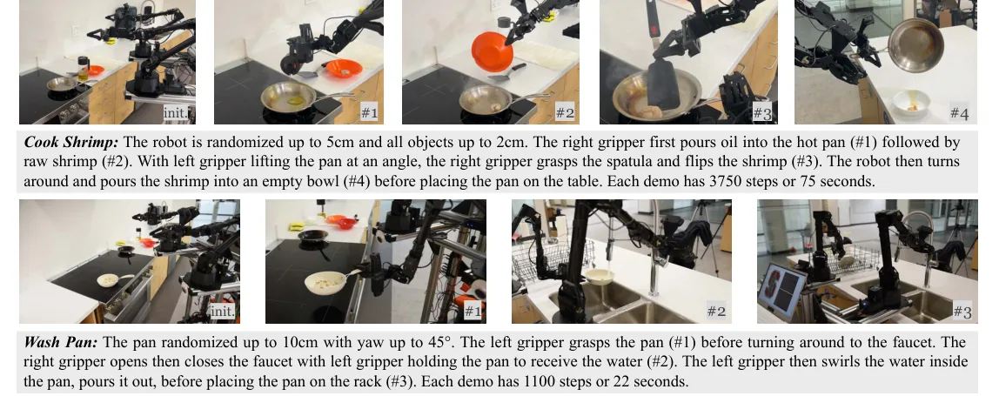

💡速记层 · 思想 / 逻辑 / 方法
默认读完就走的一层——只讲思想、逻辑、方法；效果只作验证。要核对原文/钻细节再看下面的「深读层」。
- 现实家务需要底盘移动 + 双臂协调同时进行（开柜要后退、翻虾要转身），纯臂机器人做不了。
- 双臂移动机器人要么太贵（PR2 $200k+），要么遥操方案不支持全身同步控制（只控单臂 / 需要动捕系统）。
- 解法：腰带物理接缚让操作者直接用腰驱动底盘，双手同时控制两条 ALOHA 手臂——零额外设备，全身同步。
- 但移动数据稀少，精细操作（抓虾铲翻面、拧水龙头）单靠 50 次很难收敛。用现有静态双臂数据联合训练——这些数据里有丰富的抓取先验，即便底盘/背景/手臂朝向都不同，也能正迁移。
- 动作空间简单拼接（14 DoF 手臂关节 + 2 DoF 底盘速度 = 16 维），几乎不需要改 ACT / Diffusion Policy 实现，直接用。
7 个任务中 co-training 使 5 个任务成功率显著提升；平均 34% 绝对提升，最高 +90%（Press Button）；以 ACT 为基础，多数任务 80%+ 成功率。Co-training 优于 Pre-training（后者因 fine-tuning 遗忘失效）。
想看具体数字（点开）
- Wipe Wine: co-train 95% vs no co-train 50%（+45%）
- Call Elevator: 95% vs 0%（+95%，Press Button 子任务 100% vs 5%）
- Use Cabinet: 85% vs 85%（co-train 对该任务影响不大）
- Rinse Pan: 80% vs 0%（Turn On Faucet 子任务: 80% vs 0%）
- Push Chairs: 80% vs 0%（OOD 4th/5th 椅子: co-train 85/89% vs no co-train 70/0%）
- Data efficiency: co-train 35 demos > no co-train 50 demos（+20%）
- Co-train 对不同数据比例（30%/50%/70%）均鲁棒（95%/95%/90%）
Track A（移动操作 VLA）间接但基础性命中：Mobile ALOHA 本身不是 VLA，而是移动操作的数据采集基础设施 + co-training 方法论。π0.5 等 VLA 正是在此类平台上采集数据并验证泛化的——理解 Mobile ALOHA 是理解 VLA 移动操作数据来源的前提。co-training「用异构静态数据迁移到移动操作」的思想，在 π0.5 中被大幅扩展。Track B（足式 locomotion）不相关——本文专注轮式底盘，不涉及步态控制。
◆核心观点 · 证据
每条 = 中文论点 + 📍页/节 + 🔤逐字原文(Ctrl-F 锚点) + 🀄译文 + 💡解读。点开原文即可最短路径核对。
most results focus on table-top manipulation, lacking the mobility and dexterity necessary for generally useful tasks.

We found the design of tethering the operator's waist to the mobile base to be the most simple and direct solution, as shown in Figure 2 (left). The human can backdrive the wheels which have very low friction when torqued off.
With design considerations above, we build Mobile ALOHA with a $32k budget, comparable to a single industrial cobot such as the Franka Emika Panda.
Despite the differences in tasks and morphology, we observe positive transfer in nearly all mobile manipulation tasks, attaining equivalent or better performance and data efficiency than policies trained using only Mobile ALOHA data.
Since static ALOHA datapoints have no mobile base actions, we zero-pad the action labels so actions from both datasets have the same dimension.

for all tasks mentioned above, open-loop replaying a demonstration with objects restored to the same configurations will achieve zero whole-task success.

We find co-training to be more helpful for sub-tasks where precise manipulation is the bottleneck, for example Press Button, Flip Shrimp, and Turn On Faucet. In all of these cases, compounding errors appear to be the main source of failure, either from the stochasticity of robot base velocity control or from rich contacts such as grasping of the spatula and making contact with the pan during Flip Shrimp.
we compare co-training and pre-training on the static ALOHA data. For pre-training, we first train ACT on the static ALOHA data for 10K steps and then continue training with in-domain task data. We experiment with the Wipe Wine task and observe that pre-training provides no improvements over training solely on Wipe Wine data. We hypothesize that the network forgets its experience on the static ALOHA data during the fine-tuning phase.
We notice a steep decline in completion time: on average, the time it took to perform the task went from 46s to 28s for Wipe Wine (down 39%), and from 75s to 36s for Use Cabinet (down 52%). The average participant can also to approach speed of expert demonstrations after 5 trials, demonstrating the ease of use and learning of Mobile ALOHA teleoperation.
⎘开源状态
Mobile ALOHA 是完全开放的系统——包括软件、硬件设计与数据集。
- 代码
- 已开源 github.com/MarkFzp/mobile-aloha（训练脚本 ACT/Diffusion Policy/VINN + 数据采集）
- 硬件
- 已开源 3D 打印文件 + 装配教程 + BOM 清单，详见项目网站 mobile-aloha.github.io
- 数据
- 已开源 7 个任务的 Mobile ALOHA 演示数据集通过 RT-X 渠道公开，静态 ALOHA 数据已在此前工作中开源
Beyond the off-the-shelf robots, we open-source all of the software and hardware parts with a detailed tutorial covering 3D printing, assembly, and software installation. The tutorial is on the project website.
⚖批判 · 评级
这篇论文奠定了「低成本移动双臂操作学习」的基础设施。两个贡献都扎实：硬件上「腰带 backdrive」的 insight 极简有效（比动捕/VR 方案便宜 10×+），学习上「静态数据 co-training」的正迁移发现反直觉但有多任务/多算法佐证。这正是 π0.5 等 VLA 工作的数据采集基础——不了解这一层，就无法理解「移动操作 VLA 数据从哪里来」。
① 泛化极为有限：每个任务都是单场景（同一厨房/走廊），无场景泛化评估；② Cook Shrimp 只有 20 demos + 5 trials，40% 成功率的统计置信度很低；③ 底盘速度控制不稳定（180° 转弯平均 >10cm 误差），导致对精细操作的需求更强；④ co-training 数据是 825 条 OOD 数据 vs 20-50 条 in-domain，这个极度不均衡比例在理论上未解释清楚，仅靠实验验证；⑤ 硬件仍有限制：固定臂高度导致低柜/烤箱/洗碗机难以够到。
评级：Important 不是算法突破，但是基础设施和 co-training 方法论的重要贡献，直接催生了后续 VLA 在移动操作上的探索。对 Track A 研究者是必读的背景工作。